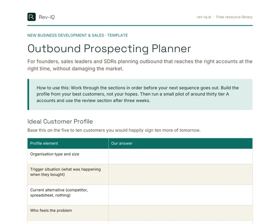

Your Market Is Smaller Than Your List
Most outbound programs are designed as if the supply of buyers is endless. Load a few thousand contacts, send a five-step sequence, measure the reply rate, repeat with the next batch. That logic works for consumer marketing at scale. It works badly for a B2B technology business whose real market might be a few hundred companies, and inside each of them, three or four people who could ever say yes.
When the market is that finite, every poorly aimed message has a cost that never shows up on a dashboard. The person you emailed with an irrelevant pitch doesn't just ignore you this week. They file your company under noise, and when they do have the problem eighteen months from now, your name is the one they skip. In tight industries, buyers also talk to each other. A reputation for clumsy, high-volume outreach travels faster than a reputation for being useful.
Good outbound starts from a different premise: you are spending a limited stock of attention and goodwill, so spend it on the accounts most likely to need you, at the moments they are most likely to care, with a message that proves you've done the work. Done that way, outbound is one of the most controllable sources of pipeline a business has. Done the other way, it quietly shrinks the market you are trying to grow into.
Start From the Customers You'd Clone
An ideal customer profile is not a description of everyone who could theoretically buy. It is a description of the customers you would happily sign ten more of tomorrow: they bought without heroic effort, they got value quickly, they renewed, and they didn't consume a disproportionate share of your team's time. If you have even a handful of customers, start there rather than with a market sizing exercise.
Look at your best five to ten customers and answer the same questions for each. What kind of organisation are they, and how big? What was happening in the business when they started looking? What were they using before, whether a competitor, a spreadsheet or nothing at all? Who felt the problem, who championed the purchase, and who signed? What made them choose you over doing nothing? The patterns that repeat are your profile. The ones that appear once are anecdotes.
Write the disqualifiers down as clearly as the qualifiers. Companies below a certain size that can't afford implementation, industries where a regulatory constraint makes you a poor fit, organisations locked into a long contract with a platform you can't integrate with. A profile with explicit exclusions saves more time than one that only describes the ideal, because it gives a rep permission to stop pursuing accounts that will never close.
Keep the account profile separate from the people you will contact. The account profile tells you which companies to pursue. Personas tell you who inside those companies feels the problem, and what each of them cares about. A head of operations and a CFO at the same company might both be right contacts, but they need different reasons to reply.
| Profile element | A vague answer | A useful answer |
|---|---|---|
| Organisation type and size | Mid-market businesses | Multi-site logistics operators with 80 to 400 staff |
| Trigger situation | Growing companies | Opening a second distribution centre or taking on a new major contract |
| Current alternative | Legacy systems | Spreadsheets maintained by two or three coordinators, plus manual rework |
| Who feels it, who signs | Decision makers | Operations manager feels it daily; general manager or CFO approves spend |
| Disqualifiers | None listed | Single site, under 50 staff, or mid-way through a multi-year ERP rollout |
Tier the Accounts Before You Write a Word
Once you have a profile, build the account list against it and then tier it. Tiering is what stops a team from treating every account the same, which in practice means treating every account superficially. A simple three-tier model is enough for most businesses.
| Tier | Definition | Research depth | Outreach style |
|---|---|---|---|
| A | Strong fit to the profile and a current reason to act | Individual account research, multiple contacts mapped | Personal, multi-channel, written for that account |
| B | Strong fit, no visible trigger yet | Light research by segment, one or two contacts | Segment-specific messaging with a genuine personal line |
| C | Partial fit or unknown | Minimal | Marketing nurture, not sales time, until a signal appears |
The discipline is keeping tier A small enough to do properly. A rep with two hundred tier A accounts has no tier A accounts, because nobody can research two hundred companies well. A workable starting point is a few dozen tier A accounts per person at any one time, refreshed as accounts move in and out. Accounts move between tiers when the evidence changes: a tier B account that announces an expansion moves up; a tier A account that signs with a competitor moves down and gets a reminder to revisit at their renewal date.
Find a Reason to Reach Out Now
The difference between a message that gets ignored and one that gets a reply is usually timing, not copy. Someone who has the problem right now will forgive an imperfect email. Someone who doesn't will ignore a brilliant one. Signals are how you find the right moment.
Useful signals are observable events that make your problem more likely or more expensive. Common ones include:
- Hiring for a role that only exists because of the problem you solve, or hiring heavily in the team that feels it.
- A new leader in the function you sell to, who will be reviewing tools and processes in their first months.
- Expansion: new sites, new markets, an acquisition or a major new contract.
- A regulatory or industry change that creates a new obligation or deadline.
- A public statement of priorities in an annual report, a press release, an interview or a conference talk.
- Direct engagement with your business: attending a webinar, downloading a resource, or a former customer contact joining a new company.
Not every event is a signal. Funding announcements are the classic example of noise: every vendor in the market emails the company the same week, and most of those messages say the same thing. A signal is only useful if you can explain, in one sentence, why that event makes your problem more pressing for that account. If you can't, it is just a reason to send another email.
Research That Earns the Right to Ten Minutes
Research for outbound has one purpose: to let you write a message that could only have been sent to that person. It does not need to be exhaustive. For a tier A account, ten to fifteen minutes is usually enough to find three things: what the company has said publicly about its priorities, what is likely making your problem worse for them right now, and who else is involved in the decision.
Turn those facts into a hypothesis rather than a pitch. "You're opening a second site in Brisbane, and coordinators are usually the first people to feel scheduling get harder when volume splits across locations" is a hypothesis. The buyer can confirm it, correct it or ignore it, but it shows you understand their world. "We help logistics companies improve efficiency" is a pitch, and it could have been sent to anyone.
Be careful with what passes for personalisation. Mentioning someone's university, a recent holiday post or a shared interest is not relevance, and many buyers find it intrusive. Relevance is about their role and their business. AI research tools can make the gathering faster, but they also produce confident errors. Check every fact you put in a message, because one wrong detail undoes the credibility the research was meant to build.
Writing Messages a Busy Buyer Will Actually Read
A first-touch email has about as long as it takes someone to scan it on a phone between meetings. That means short, plain and specific. A structure that works for most B2B outreach has four parts:
- The observation. One sentence on what you noticed and why it made you think of them.
- The problem in their words. One or two sentences describing what that situation usually causes, framed the way they would describe it to a colleague, not the way your product page describes it.
- A credible point of view. One sentence on how others in their position deal with it, or what you've seen work. If you have relevant proof you're able to share, use it. If you don't, a clear explanation of the approach is better than an inflated claim.
- A low-friction ask. Ask whether it's relevant, not for thirty minutes of their time. "Is this on your radar for the new site?" is easier to answer than a calendar link.
Here is the difference in practice. A typical cold email opens with the sender's company, lists features, claims a percentage improvement with no context and asks for a call next Tuesday. A better version reads something like this:
Example first-touch email
Subject: Scheduling across two sites
Hi Sam, saw the announcement about the new Brisbane distribution centre. When volume splits across two sites, the scheduling spreadsheet that worked for one usually becomes a daily reconciliation job for the coordinators.
Most operations teams we speak with in that position either add headcount to keep up or move scheduling into a shared system before the second site goes live. The second option is usually cheaper, but only if it's done before the busy season.
Is multi-site scheduling something you're already working through, or not a priority yet?
It is short, it is about them, and the ask can be answered in five words. A few other rules help. Keep subject lines plain and specific; anything that looks like a marketing campaign gets treated like one. Avoid fake familiarity such as "Re:" on a first email or "as promised" when nothing was promised. Never write "just bumping this to the top of your inbox". Every follow-up should add something: a different angle, a useful resource, a relevant question.
Sequences That Are Short, Multi-Channel and Have an End
A sequence is the planned set of touches you will make to one contact before you stop. Long, single-channel sequences are where outbound does the most damage: eight or ten near-identical emails over a month tell the buyer you're running software, not paying attention. A better default for tier A and B contacts is four to six touches over roughly three weeks, spread across channels, with each touch adding something new.
| Day | Channel | Purpose |
|---|---|---|
| 1 | The observation, the problem and a light question | |
| 3 | Phone | A short call referencing the email; leave a brief voicemail if appropriate |
| 6 | A connection request with a one-line note, no pitch | |
| 9 | A different angle: a useful resource, a relevant example or a sharper question | |
| 14 | Phone | A second attempt, ideally at a different time of day |
| 20 | A clear close: you'll stop following up, and here's how to reach you if timing changes |
Two rules make sequences safer and more effective. First, set stop rules: any reply, positive or negative, ends the sequence and moves the contact to a human conversation or a respectful close. An unsubscribe or a request to stop is honoured everywhere, not just in the email tool. Second, set a recycle rule: a contact who didn't respond goes quiet for at least a quarter and only comes back into a sequence when there is a new signal, not simply because the calendar says so.
Multi-threading belongs here too. For tier A accounts, you will often reach two or three people with different messages suited to their roles. Coordinate it. Three people at the same company receiving the same template on the same morning is the fastest way to be forwarded to IT as spam.
Cold Calls Still Work When They're Honest
Phone outreach has a reputation problem, mostly because so much of it is scripted and evasive. An honest call is different. Say who you are and why you're calling in the first sentence. Ask whether they have a moment, and mean it. Then ask one good question about the problem rather than reciting a pitch: "When you opened the second site, did scheduling get harder or did the spreadsheet hold up?"
If they say they're not interested, it is reasonable to ask one clarifying question, such as whether it's the wrong time or the wrong problem. After that, respect the answer, thank them and log the reason. A call that ends politely leaves the door open. A call where the rep argues through three objections closes it, and the buyer remembers.
Staying on the Right Side of the Rules
Outbound is regulated almost everywhere, and "everyone does it" is not a defence. The most important point is one that many teams miss: the rules that apply depend mainly on where the people you contact are, not just where your business is. Australian and New Zealand law both apply when either the sender or the recipient is in that country. An Australian business emailing prospects in Auckland needs to meet New Zealand's rules as well as its own, and the same is true in reverse.
The summary below is general information, not legal advice. Take advice for your circumstances, particularly before using bought data, sending at volume or prospecting into a new country.
Australia
The Spam Act 2003 applies to commercial electronic messages, including email, SMS and instant messages, and it applies to businesses as recipients, not only consumers. The Australian Communications and Media Authority (ACMA) summarises the three core obligations:
- Consent. You need express or inferred consent before sending. Inferred consent can arise from an existing business relationship, or in limited circumstances from the conspicuous publication of a work email address, where the message is directly relevant to the person's role and the publication isn't accompanied by a statement that they don't want unsolicited messages. ACMA is clear that an address being published online is not, on its own, consent.
- Identification. Each message must accurately identify who sent it and include contact details that remain valid for at least 30 days.
- Unsubscribe. Each message needs a clear, functional way to opt out that works for at least 30 days, doesn't cost the recipient or require them to log in, and is actioned within five working days.
The burden of showing consent sits with the sender, and using an agency or a tool to send on your behalf doesn't transfer it. That is why bought or scraped lists are such a risk: they almost never come with evidence of consent you could rely on. Keep a record of where each contact came from and the basis on which you're contacting them.
Calls made to offer or promote goods or services are telemarketing calls. Numbers on the Do Not Call Register can't be called for telemarketing without consent. Business numbers aren't eligible for the register, but a mobile used mainly for personal purposes can be registered, so if your lists include mobile numbers, check (or "wash") them against the register before calling. Separate rules set permitted calling hours and require callers to identify themselves and their business at the start of the call. ACMA's telemarketing guidance sets out the detail. Depending on your size and activities, the Privacy Act 1988 may also apply to how you collect, store and use contact details.
New Zealand
The Unsolicited Electronic Messages Act 2007 follows a very similar model, enforced by the Department of Internal Affairs. Commercial messages need express, inferred or deemed consent. Deemed consent is New Zealand's version of the published-address rule: it applies when someone has conspicuously published their address in a business capacity, without a statement refusing unsolicited messages, and your message is relevant to their role. Messages must identify the sender with accurate contact details, and include a free, clearly presented unsubscribe that stays functional for at least 30 days, with requests actioned within five working days.
Two differences are worth knowing. New Zealand law specifically prohibits using address-harvesting software to build lists for unsolicited commercial messages. And the Department is explicit that the sender, not the seller of a database, has to prove consent. The Privacy Act 2020 also applies to how New Zealand organisations handle personal information, including business contact details.
Other markets
If you prospect further afield, the rules vary considerably. A brief orientation:
| Market | Consent for cold B2B email? | Key requirements |
|---|---|---|
| United Kingdom | Not required for limited companies; required for sole traders and some partnerships | Don't hide your identity, always offer an opt-out, and meet UK GDPR for named contacts. See the ICO's guidance |
| United States | Not required; it is an opt-out regime | Accurate headers and subject lines, a physical postal address, and opt-outs honoured within 10 business days. See the FTC's guide |
| Canada | Required, and stricter than Australia | Published-address consent only applies where the recipient published it themselves, and relationship-based consent expires. See the CRTC's guidance |
| European Union | Varies by country | Some countries require consent even for business contacts. Check with the local regulator before sending |
The practical takeaway is that the commercially sensible approach and the compliant approach point the same way. A smaller, well-researched list of people whose role makes your message genuinely relevant, clear identification, and an easy way to opt out that you honour within five working days meets or comes close to the strictest of these standards. Build to that, and confirm the local rules before you add a new country to your target list.
Measure What Tells You the Truth
Outbound generates a lot of numbers, and most of them are vanity metrics. Open rates in particular are no longer reliable, because privacy features in common email clients load images automatically and register "opens" that never happened. Measure the things that reflect a real person making a real decision:
- Positive reply rate. Replies that express interest or ask a question, as a share of contacts sequenced. Count these separately from "not interested" and "remove me".
- Meetings held. Not booked, held. A booked meeting that doesn't happen is a cost, not an outcome.
- Qualified opportunities created. Meetings that the account executive or founder agreed were worth pursuing.
- Opt-out, complaint and bounce rates. These are your early warning that targeting or messaging is off, and that your sending reputation is at risk.
Review results by segment, tier and message, not just in aggregate. A program with a respectable overall reply rate can be hiding one segment that responds well and three that don't. Build your own baseline over the first six to eight weeks rather than borrowing benchmarks from vendor reports, which rarely reflect your market, your price point or your list quality.
Putting It Into Practice
Use the Outbound Prospecting Planner to work through the decisions in order before the next sequence goes out: your profile and disqualifiers, the tiering rules, the signals that matter for your market, the message structure, the sequence and its stop rules, and the compliance basics. It is deliberately short. The aim is to make the thinking explicit so a founder, a new SDR or an account executive can all run outbound the same way.
Then run a small pilot, perhaps thirty tier A accounts, and review it honestly after three weeks. Which signals produced conversations? Which lines in the message did buyers respond to? Where did people opt out? Those answers, from your own market, are worth more than any template, including this one.
- Treat your market as finite: every irrelevant message spends goodwill you may need when the buyer actually has the problem.
- Build the ideal customer profile from the customers you'd happily clone, and write the disqualifiers down as clearly as the qualifiers.
- Tier accounts before writing anything, and keep tier A small enough to research properly.
- Timing beats copy: reach out when an observable signal makes your problem more pressing, and be able to explain why in one sentence.
- Keep sequences short, multi-channel and finite, with stop rules for any reply and a recycle rule that waits for a new signal.
- The recipient's country decides which rules apply. In Australia and New Zealand, commercial email needs consent, accurate sender identification and a working unsubscribe actioned within five working days. Bought lists rarely carry consent you can rely on.
Frequently asked questions
How many accounts should be in tier A?
Few enough to research each one properly. A few dozen per person at any time is a workable starting point, refreshed as accounts move between tiers when new signals appear or disappear.
How many touches should an outbound sequence have?
For most B2B outreach, four to six touches over around three weeks across email, phone and LinkedIn is enough. Each touch should add something new, and any reply should end the sequence.
Can I cold email business contacts in Australia?
Only with consent. The Spam Act 2003 allows inferred consent in limited cases, such as a conspicuously published work address where your message is directly relevant to the person's role and there's no statement refusing unsolicited messages. A published address alone isn't consent. This is general information, not legal advice.
Do the same rules apply in New Zealand?
Very similar ones. The Unsolicited Electronic Messages Act 2007 requires consent (express, inferred or deemed), accurate sender details and a working unsubscribe actioned within five working days. It applies when either the sender or the recipient is in New Zealand, so Australian businesses emailing NZ prospects need to meet it too. This is general information, not legal advice.
Are open rates still a useful outbound metric?
Not on their own. Privacy features in common email clients register opens that didn't happen. Positive replies, meetings held and qualified opportunities created are far more reliable measures.
Outbound Prospecting Planner
For founders, sales leaders and SDRs planning an outbound motion that targets the right accounts, at the right time, without damaging the market.

- Ideal Customer Profile
- Account Tiering Rules
- Timing Signals
- Account Research Brief
- Message Check
- Sequence Plan and Stop Rules
- Compliance Check: Australia and New Zealand
- Pilot Review
- Format
- PDF, 6 pages, designed to print and fill in
- Best for
- Founders and sales leaders building or fixing an outbound prospecting motion
- What to bring
- Your five to ten best customers, your current target list, and any outreach messages you're using now
- After you submit
- Your download starts straight away. Nothing is emailed to you, and you won't be added to a mailing list unless you tick the opt-in.
Rev-IQ SDR Kit
Six AI skills for Claude, ChatGPT and Perplexity that apply this framework: tier your target accounts, write a one-page research brief, and draft short sequences that are checked for opt-outs, placeholders and the recipient country's rules before they go out. They run in your own AI account.
See the SDR Kit →Templates get you moving fast. If you want a structured read on where this is actually breaking down in your business, that's a short diagnostic conversation, not another download.
Discuss advisory support →